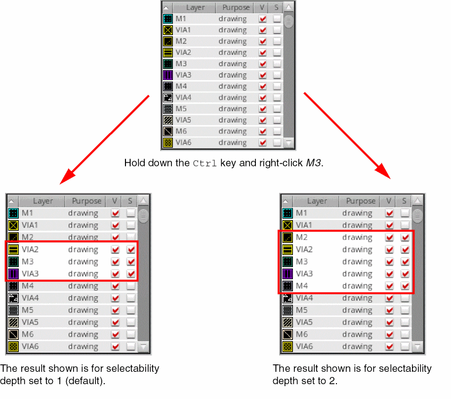

Setting Layer Visibility and Selectability Depth in Single Selection Mode
When single-selection mode is enabled for the Palette assistant, you can set the visibility and selectability depths for layer-purpose pairs. This involves specifying the number of layer-purpose pairs for which the visibility and selectability attributes are affected when you select a layer in the Layers panel.
To set visibility and selectability depths for layer-purpose pairs:
-
Choose Options from the Palette context menu. You can display the menu by right-clicking any toolbar in the Layers panel or anywhere in the Objects and Grids panels except the title bar and column headers.
The Options form appears.
- Deselect the Multi-select mode check box, if selected.
- In Depth for Visibility, specify the number of layer-purpose pairs for which you want the visibility attribute to be affected when you select a layer in the Layers panel.
- In Depth for Selectability, specify the number of layer-purpose pairs for which you want the selectability attribute to be affected when you select a layer in the Layers panel.
- Click OK.
-
Explore setting the visibility attribute of layer-purpose pairs.
-
Hold down the
Ctrlkey and click a layer-purpose pair with the middle mouse button. This turns on or off the visibility of the layer-purpose pair that is clicked and n layer-purpose pairs listed both above and below it, where n is equal to the value that you specified in the Depth for Visibility field. -
Hold down the
CtrlandShiftkeys and click a layer-purpose pair with the middle mouse button. This sets as visible the layer-purpose pair that is clicked and n layer-purpose pairs listed both above and below it, where n is equal to the value that you specified in the Depth for Visibility field. Additionally, this sets the layer-purpose pair that you clicked as active.
-
Hold down the
-
Explore setting the selectability attribute of layer-purpose pairs.
-
Hold down the
Ctrlkey and right-click a layer-purpose pair. This turns on or off the selectability of the layer-purpose pair that is clicked and n layer-purpose pairs listed both above and below it, where n is equal to the value that you specified in the Depth for Selectability field. -
Hold down the
CtrlandShiftkeys and right-click a layer-purpose pair. This turns on the selectability of the layer-purpose pair that is clicked and n layer-purpose pairs listed both above and below it, where n is equal to the value that you specified in the Depth for Selectability field.
-
Hold down the
Related Topics
Setting Attributes for Multiple Layers in Multi-Selection Mode
Return to top